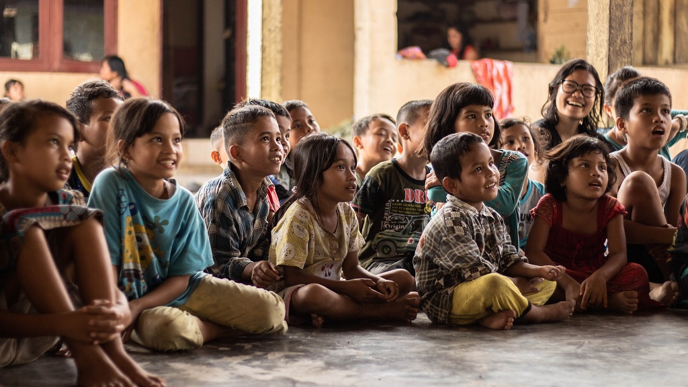

Pengaruh Ilmu Terhadap Perkembangan Budaya Nasional
Pengaruh ilmu terhadap perkembangan budaya Indonesia membentuk suatu dinamika yang tidak hanya mencerminkan kemajuan teknologi dan pengetahuan, tetapi juga memainkan peran penting dalam membentuk identitas dan keberlanjutan warisan budaya bangsa. Ilmu pengetahuan memberikan kontribusi signifikan dalam menggali, memahami, dan mendorong pengembangan aspek-aspek budaya Indonesia. Kajian ilmiah terhadap sejarah, antropologi budaya, seni, dan bahasa membuka pintu untuk pemahaman mendalam tentang akar budaya, nilai-nilai, dan tradisi yang menjadi ciri khas Indonesia.
Sejarah dan antropologi budaya memberikan wawasan mengenai evolusi masyarakat Indonesia dari masa ke masa. Kajian ini tidak hanya memaparkan peristiwa-peristiwa penting dalam perjalanan sejarah bangsa, tetapi juga merinci peran budaya dalam pembentukan struktur sosial dan nilai-nilai yang berkembang. Pemahaman terhadap masa lalu sudah menjadi landasan bagi upaya pelestarian dan pengembangan budaya Indonesia.
Ilmu bahasa juga ikut memegang kunci dalam perkembangan budaya Indonesia. Pengkajian dan pelestarian bahasa-bahasa daerah adalah suatu upaya untuk menjaga identitas budaya lokal. Perkembangan bahasa Indonesia sebagai bahasa nasional sudah menjadi hal yang positif dari pengaruh ilmu pengetahuan dalam menciptakan sebuah komunikasi yang menyatukan berbagai etnis dan budaya di Indonesia.
Perkembangan ilmu juga tercermin dalam bidang seni dan teknologi. Inovasi di dunia seni mencerminkan pandangan baru terhadap tradisi dan kekayaan budaya Indonesia. Teknologi juga memainkan peran yang besar dalam mendukung dan mempopulerkan kebudayaan melalui internet dan media sosial.